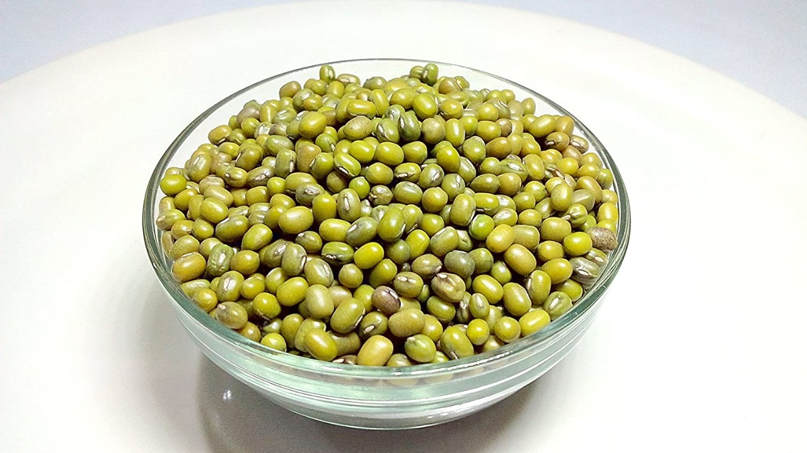

-
Green Gram Pulses
IN STOCK
Price : Rs.180/-
Quantity : 1Kg
Today's offer : 7%
You saved Rs.12.6/-.
About this item
- The green gram is an annual vine with yellow flowers and fuzzy brown pods.
- It is a rich source of low fat protein, has a wide amino acid profile and contains no trans or saturated fats
- It digests slowly and gradually releasing sugar into the blood and helps maintain the blood sugar level.